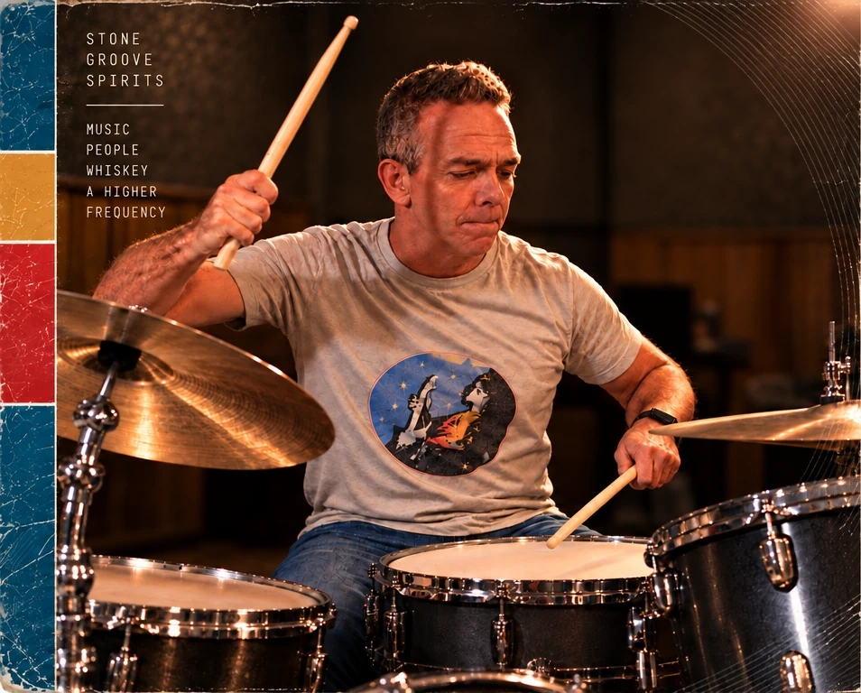

06 / OUR STORYANAHEIM, CALIFORNIA
BUILT ON
MUSIC.
BEFORE THERE WAS WHISKEY,
THERE WAS MUSIC.
THERE WAS MUSIC.
SHISHA SAMPLE began with founder Jeff Duggan's lifelong passion for music, rhythm, and the artistry of bringing individual elements together to create something extraordinary.
As a drummer, Jeff learned that great music isn't simply about individual performances. It's about how everything comes together. The interplay of instruments. The balance of different voices. The subtle details that transform a collection of notes into something unforgettable.
That same philosophy became the foundation for SHISHA SAMPLE.
We approach whiskey as musicians approach their craft—with an appreciation for tradition, an instinct for composition, and an obsession with finding something distinctive. From selecting mature barrels and composing our blends to developing Musically Mastered™, music influences not only how we think, but how we create.
Born from a passion for music and rooted in Anaheim, California, SHISHA SAMPLE is where a lifetime of musical inspiration finds an entirely new form of expression.
FOUNDER NOTES
JEFF DUGGAN
MUSICIAN / BLENDER / FOUNDER
ANAHEIM, CA
MUSIC IS OUR FOUNDATION.
WHISKEY IS OUR VOICE.
WHISKEY IS OUR VOICE.
Built on Music.
Before there was whiskey, there was music. Music is our foundation. Whiskey is our voice.